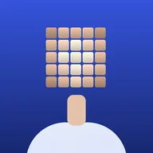
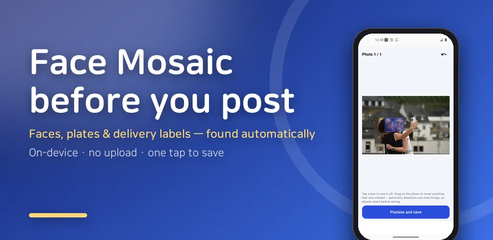
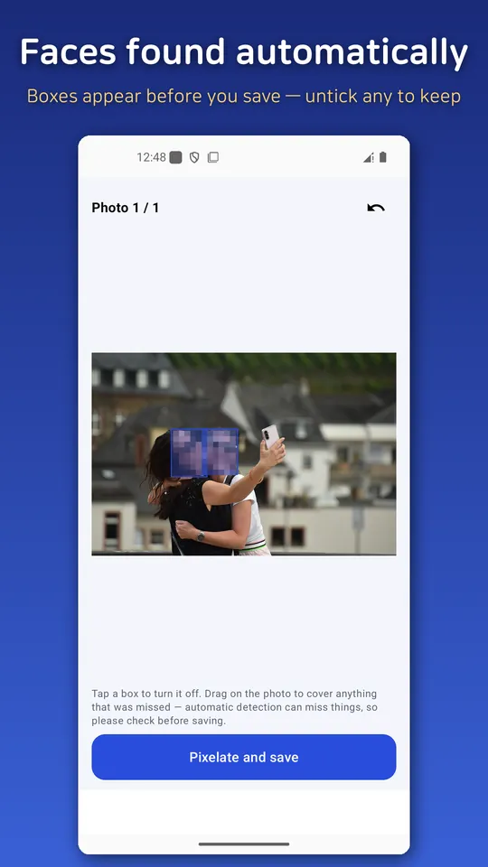
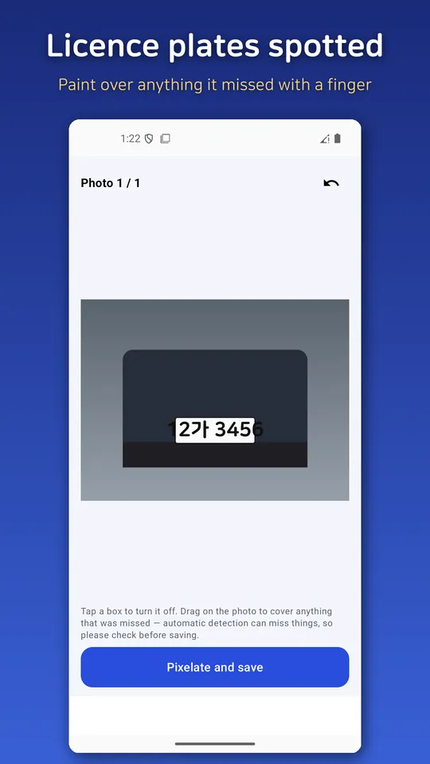
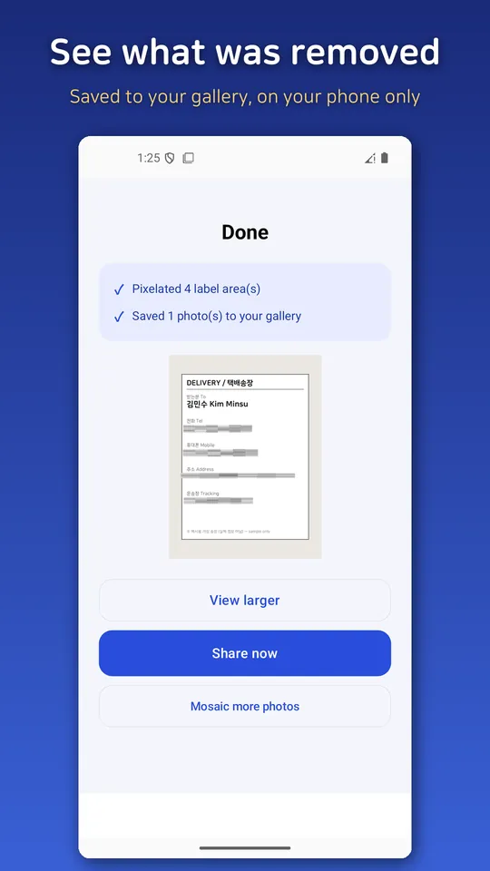
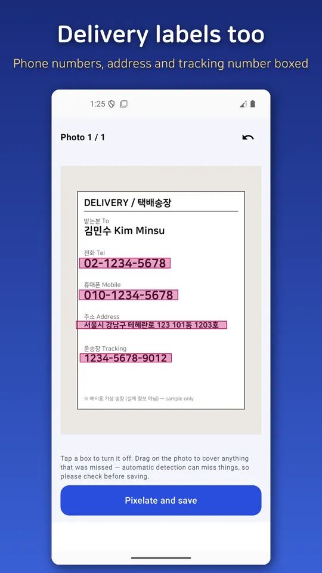

Blur Face: Photo Mosaic Censor
Blur faces, plates and labels automatically, strip GPS EXIF. All on your phone





About this app
Before you post to a marketplace, Instagram, or a blog, Face Mosaic automatically finds faces, car licence plates, and delivery labels and pixelates them — and it also strips the hidden location (EXIF) stored inside your photo. Your phone's built-in mosaic makes you smudge everything by hand; this app finds faces automatically and processes several photos at once. Everything happens on your phone — your photos are never uploaded to a server.
▼ What it does
- 🙂 Auto face mosaic: Finds faces in your photos and covers them — several photos at once.
- 🚗 Licence-plate blur: Detects car plates and suggests a mask.
- 📦 Delivery-label / receipt blur: Finds number and text areas like phone numbers and addresses and suggests covering them.
- 📍 Removes location (EXIF): Strips the GPS and device info saved in the photo, with a "removed" report so you can confirm.
- 🗜️ Upload-friendly compression: Shrinks photos to a size that's easy to post.
- ✍️ Paint over misses by hand: Anything auto-detection misses, you can smudge over yourself.
▼ The real convenience — the Share sheet
No need to open the app first. While picking a photo in your Gallery or a marketplace app, tap "Share → Face Mosaic," mosaic it, and share it right back.
▼ Why this app — honestly free
- 🔒 Your photos never leave your phone: 100% on-device, no cloud upload.
- 🙅 No login or sign-up: Install and use right away.
- 💧 No watermark: Mosaicked photos carry no app logo or watermark.
- 🚫 No subscription, no fake free trial.
- 📴 Works offline: Mosaic and save without an internet connection.
▼ Handy when you
- Sell an item online and need to hide a face or car plate caught in the background
- Post a photo of your kids and want to cover their faces
- Share a photo of a parcel or receipt with an address or phone number on it
- Want to strip GPS location before posting travel photos
▼ Please note
Automatic detection is not 100%. It can miss side profiles, small faces, or partially hidden plates, so always check the preview before saving and paint over anything it missed. This app is a tool that helps you process photos; it does not guarantee complete protection.
This is a free app supported by ads. A banner ad and an interstitial ad at save time keep the app running, and regardless of ads, your photos are never uploaded anywhere.
Android · free with ads · Developer: RealTunaLove · Store listing in 17 languages
Background story: why I built it